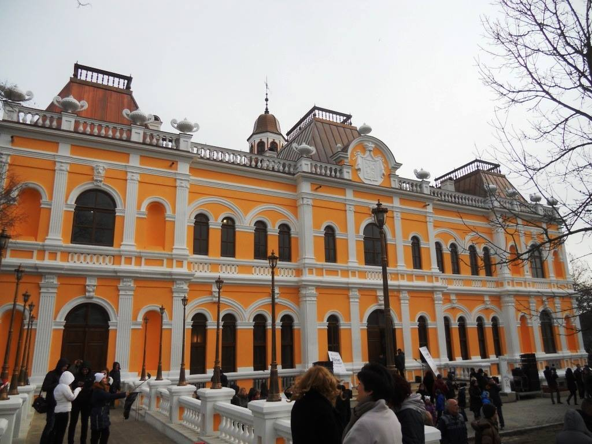

Explorează Hînceștiul
Conacul Manuc Bey
Conacul lui Manuc Bei sau Manuc Bey este amplasat în orașul Hîncești din partea central-vestică a Republicii Moldova; și include următoarele edificii: Palatul lui Manuc, Casa vechilului, Clădirea contesei, Castelul de vânătoare, Turnul de veghe ș.a. Cu toate că conacul îi poartă numele, acesta însă nu a fost ridicat de către diplomatul și negustorul de origine armeană Manuc Bei Mîrzaian, așa cum se vehiculează (el decedând la scurt timp după procurarea moșiei Hîncești, în 1817), ci de către urmașii săi – fiul Murat, care a demarat construcția vilei boierești, și nepotul diplomatului, Grigore, care a încheiat lucrările respective.[5] Conacul, de asemenea, este un monument de arhitectură înscris în Registrul monumentelor de cultură al Republicii Moldova.[6] Palatul este situat în partea de sud a orașului, pe versantul nordic al dealului, la marginea parcului. De la intrarea principală, pînă la palat, te conduce o alee. Datorită reliefului înclinat, din partea de sus a dealului se văd doar două etaje, de jos – trei. Palatul este conceput în spiritul clasicismului francez, cu deschideri largi de ferestre și loggii.
Muzeul de Istorie si Etnografie

Dacă vă numărați printre cei care nu au mari așteptări de la un muzeu rural, atunci cu siguranță vă înșelați cel puțin în cazul acestui obiectiv. Muzeul impresionează prin bogăția a ceea ce oferă, asta deși stă prost la capitolul resurse financiare pentru achiziții, exponatele fiind aduse aici, aproape în totalitate, cu titlu gratuit sau prin donații. Aici puteți admira o gamă largă de exponate: de la pâini la covoare, de la articole vestimentare naționale la cele militare din perioada sovietică, de la cărți bisericești la teascuri și de la unelte agricole - la telefoane și radiouri.
Vinăria Hîncești

Vinăria Hîncești este amplasată în regiunea Hîncești, zona vitivinicolă Codru, centrul Moldovei. Situată chiar în inima Moldovei, vinăria ocupă un loc însemnat în istoria vinificației naționale. Fabrica de vinuri din Hîncești a fost fondată de către boierul Manuc Bey în sec. XIX. După cel de-al Doilea Război Mondial aici a fost înființată și prima întreprindere de stat de prelucrare a viței de vie. Astfel, în această regiune și până în ziua de astăzi se păstrează tradiții seculare și secrete tehnologice. Regiunea Hîncești este caracterizată prin condiții climaterice excelente pentru producerea vinurilor, în special a celor albe, seci și spumante.